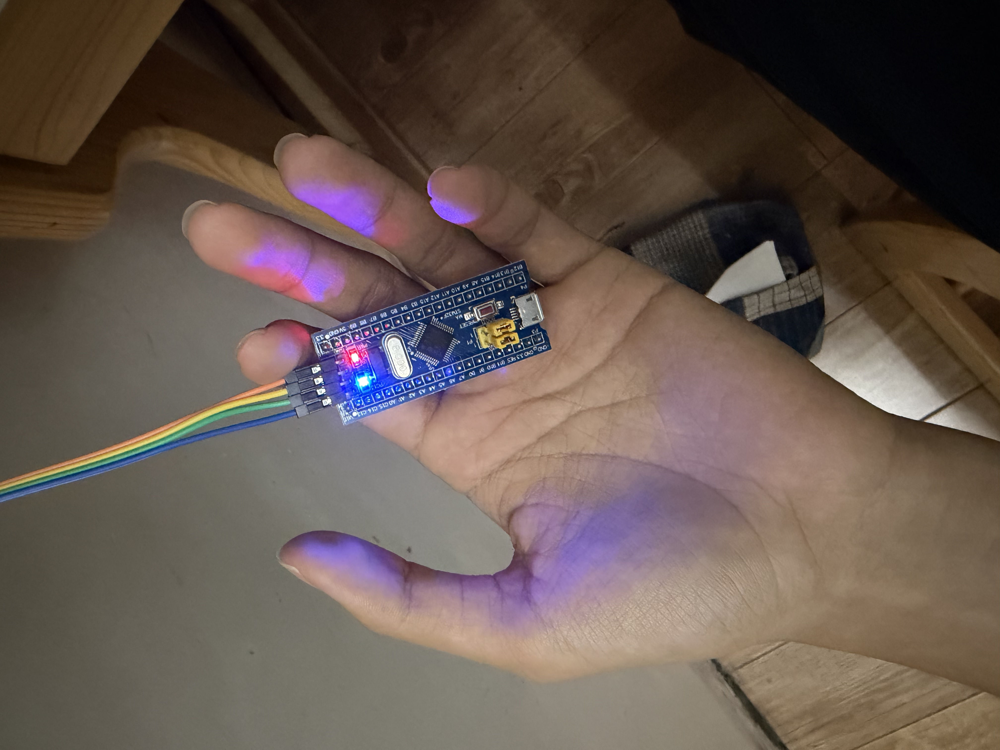
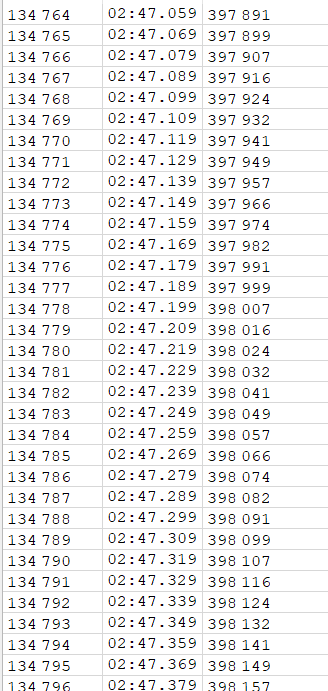
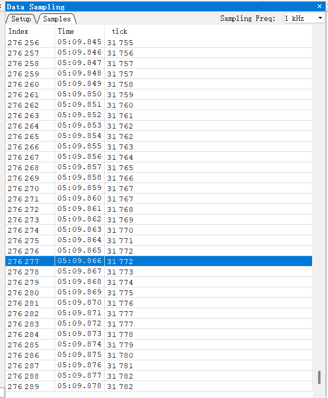

| 项 | 内容 |
|---|---|
| 姓名 | 陈恩牧 |
| 学号 | 3260100694 |
| 日期 | 2026-10-04 |
| 工程 | HW1（STM32F103C8T6 最小系统板 + 克隆 J-Link） |
| 仓库 | https://github.com/Deplo-EM/RM-HW1-F103 |
说明：按老师要求，正文不放任何截图/照片，所有图片统一放在最后的附录，正文只写"见图 X"。
| 题 | 做什么 | 预期现象 | 对应附录 |
|---|---|---|---|
| 第 1 题 | PC13 输出低电平，点亮板载 LED | 板载灯常亮 | 图① |
| 第 2 题 | TIM2 更新中断，周期 1 ms，中断里 tick++ 并喂狗 | tick 每秒增加约 1000 | 图② |
| 第 3 题 | 删掉喂狗，其余不动 | tick 涨到约 2000 → 芯片复位 → tick 归零，反复 | 图③ |
Tasks 里）| 目录/文件 | 谁生成的 | 说明 |
|---|---|---|
Core/、Drivers/ | CubeMX 生成 | 芯片启动、外设初始化、HAL 库 |
Tasks/inc、Tasks/src | 我自己写 | 业务代码只在这里（Tasks.h / Tasks.cpp） |
CMakeLists.txt | 老师发的模板 | set(user_folders "Tasks")，只把 Tasks 目录当作"用户代码" |
main.c | CubeMX 生成 | 只在 USER CODE 区域改动：包含 Tasks.h、调用 TasksInit()，while (1) 保持为空 |
为什么要把业务代码隔离在 Tasks 里：
CubeMX 重新生成代码时，Core/ 与 Drivers/ 里的内容会被覆盖，而 USER CODE BEGIN/END 之间的内容会被保留。把业务代码放进独立的 Tasks 目录并由老师模板单独编译，就不怕重新生成时把代码冲掉，也方便老师只看一个文件夹就能看懂我写了什么。
| 项 | 值 |
|---|---|
| 引脚 | PC13 → GPIO_Output，标签 LED |
| 输出模式 | 推挽输出（Push Pull），无上下拉 |
| 速度 | Low |
Tasks/src/Tasks.cpp 的 TasksInit()）
void TasksInit(void)
{
/* 第 1 题：把 PC13 拉低 —— 低电平点亮板载 LED */
HAL_GPIO_WritePin(LED_GPIO_Port, LED_Pin, GPIO_PIN_RESET);
}
LED_GPIO_Port / LED_Pin 是 CubeMX 根据标签 LED 自动生成的宏（分别等于 GPIOC 和 GPIO_PIN_13）；GPIO_PIN_RESET 表示输出低电平（0 V）。板载 LED 的接法是：3.3 V → 限流电阻 → LED → PC13。
所以 PC13 输出低电平时，电流从 3.3 V 经电阻、LED 流进 PC13，形成回路 → 灯亮；输出高电平时两端都是 3.3 V，没有电流 → 灯灭。这叫"低电平有效（低有效）"。
板载蓝灯常亮（对比：出厂程序是闪烁的）→ 见图①。
补充：这一题按要求还没有喂狗，所以芯片会每约 2 秒被 IWDG 复位一次。复位瞬间 LED 会短暂熄灭再重新点亮，因为时间极短（几毫秒），肉眼几乎看不出来 —— 这是预期现象，不是故障。
第一步：系统时钟 72 MHz 是怎么来的
| 环节 | 设置 | 结果 |
|---|---|---|
| 外部晶振 HSE | 板上 8 MHz 晶振 | 8 MHz |
| PLL | 倍频 ×9 | SYSCLK = 8 × 9 = 72 MHz |
| AHB 预分频 | ÷1 | HCLK = 72 MHz |
| APB1 预分频 | ÷2 | PCLK1 = 36 MHz |
| APB2 预分频 | ÷1 | PCLK2 = 72 MHz |
第二步：定时器时钟为什么是 72 MHz 而不是 36 MHz
这是最容易算错的一步：STM32 规定 —— 当 APB 预分频系数不为 1 时，挂在它下面的定时器时钟会自动 ×2。
所以：定时器时钟 = PCLK1 × 2 = 36 × 2 = 72 MHz。
（这一步在 CubeMX 里也能直接看到：时钟树页面的 APB1 Timer clocks 显示 72 MHz，.ioc 文件里是 RCC.APB1TimFreq_Value=72000000。）
第三步：用 PSC / ARR 凑出 1 ms
定时器更新频率公式：
f_update = 定时器时钟 / ((PSC + 1) × (ARR + 1))
代入我配置的值 PSC = 71、ARR = 999：
计数器时钟 = 72 MHz / (71 + 1) = 1 MHz ← 计数器每 1 µs 加 1
f_update = 1 MHz / (999 + 1) = 1 kHz ← 每 1000 个计数溢出一次
T_update = 1 / 1 kHz = 1 ms ✅
所以：每 1 ms 产生一次更新中断，中断里让 tick 加一，tick 就成了一只"毫秒表"。
（1）启动定时器（TasksInit() 里）
HAL_TIM_Base_Start_IT(&htim2); /* 启动 TIM2 的更新中断 */
为什么必须自己写这一行：CubeMX 生成的 MX_TIM2_Init() 只做了配置（设置 PSC/ARR、把中断向量挂进 NVIC），并没有启动计数。
类比：水管接好了（配置完成），但总阀门没开（没启动）→ 一滴水都不会流。
（2）中断回调（Tasks.cpp）
extern "C" void HAL_TIM_PeriodElapsedCallback(TIM_HandleTypeDef *htim)
{
if (htim->Instance == TIM2) /* 确认这次中断来自 TIM2 */
{
tick++; /* 每 1 ms 加 1 */
HAL_IWDG_Refresh(&hiwdg); /* 喂狗（第 3 题会删掉这行） */
}
}
逐点解释：
| 写法 | 为什么必须这样 |
|---|---|
extern "C" | 这是 C++ 文件，而 HAL 库是 C 写的。不加 extern "C"，C++ 会把函数名"改名"（mangling）成 _Z...，链接时 HAL 找不到这个名字 → 编译能过，但中断永远不会进你的函数（最隐蔽的坑） |
函数名 HAL_TIM_PeriodElapsedCallback | HAL 里已有一个同名的弱符号空实现；我写一个同名的强符号，链接时就会覆盖它，HAL 的中断处理流程就会调用到我的版本 |
if (htim->Instance == TIM2) | 这个回调是所有定时器共用的；判断 Instance 才知道这次是谁触发的（以后加别的定时器时不会互相干扰） |
tick++ | tick 定义为全局 volatile uint32_t（见下） |
HAL_IWDG_Refresh(&hiwdg) | 喂狗（第 2 题需要；第 3 题删掉） |
（3）tick 的定义
volatile uint32_t tick = 0; /* 每 1 ms 自增 1 的毫秒计数器 */
volatile 的作用：告诉编译器"这个变量可能被中断随时改掉，每次用都要真的去内存里读，不许缓存到寄存器里"。不加 volatile，编译器在优化时可能把它读进寄存器只读一次，导致调试器/主循环看到的值永远不变。
| 验证方式 | 结果 |
|---|---|
Ozone 后台采样 tick（Data Sampling，不停 CPU） | tick 随时间单调增长 → 见图② |
| 用独立时钟核对速率 | 主机计时 30.214 秒，tick 从 22952 涨到 53143（+30191）→ 999.2 /秒 ✅ |
用"独立时钟"再核对一遍：为确认芯片的 1 ms 真的准（而不是只有调试软件显示得准），另外用电脑的时钟（与芯片完全独立的第二个时钟）直接读取 tick 的起止值来算：
| 次 | 电脑时钟时刻 | tick |
|---|---|---|
| A | 06:28:13.661 | 22952 |
| B | 06:28:43.875 | 53143 |
30191 ÷ 30.214 = 999.2 /秒 → 与理论值 1000/秒 一致 ✅
（速率的计算只用电脑时钟，不依赖调试软件显示的时间。）
IWDG 的时钟是芯片内部的 LSI（低速内部 RC 振荡器），STM32F103 手册给的典型值是 40 kHz（C 板 / A 板是 32 kHz）。
| 环节 | 设置 | 结果 |
|---|---|---|
| LSI | 40 kHz（典型值） | 40 000 Hz |
| IWDG 预分频 | 64 | 40000 / 64 = 625 Hz |
| Reload | 1249 | 从 1249 倒数到 0，共 1250 个计数 |
超时时间 = 1250 / 625 = 2.000 秒 ✅ 明显长于 1 ms 的中断周期
注意：LSI 是内部 RC 振荡器，精度较差（可能偏差几成），所以实测超时通常在 1.5~2.5 秒之间，这是正常的；题目要求的"约 2 秒"指的是按手册典型值算出来的 2.000 秒。
tick++; /* 不动 */
// HAL_IWDG_Refresh(&hiwdg); /* 第 3 题：去掉喂狗 */
其余代码（PSC/ARR、IWDG 的分频与 Reload、tick 的逻辑）全部不动。
tick 从 0 涨到约 2000（= 约 2 秒 × 1000/秒）→ 看门狗超时 → 芯片复位 → tick 归零 → 再涨……tick 涨到 2048 时归零，随后从 0 重新开始计数 —— 与"约 2 秒 × 1000/秒"吻合 ✅观察时的注意事项（老师也特别提醒过）：CPU 被暂停（打断点 / Halt）时，IWDG 仍在继续计数 —— 因为它由独立的 LSI 驱动，不依赖 CPU。所以一旦暂停超过约 2 秒，芯片就被复位、调试器直接掉线。因此第 3 题必须用"不暂停 CPU"的方式观察（本次用的是后台采样，它在读内存的同时让 CPU 继续运行）。
用 arm-none-eabi-objdump 反汇编最终固件，中断回调里已经没有对 HAL_IWDG_Refresh 的调用：
08001b1c <HAL_TIM_PeriodElapsedCallback>:
8001b22: str r0, [r7, #4]
8001b26: ldr r3, [r3, #0] @ htim->Instance
8001b28: cmp.w r3, #1073741824 @ 0x40000000 @ == TIM2 ?
8001b2c: bne.n 8001b38 @ 不是就跳过
8001b30: ldr r3, [r3] @ 读 tick
8001b32: adds r3, #1 @ tick + 1
8001b36: str r3, [r2] @ 写回
8001b40: bx lr @ 返回（没有 bl HAL_IWDG_Refresh）
Cannot connect to the probe/programmer，但设备管理器里能看到设备、驱动也正常，换一个 USB 口就好了。这类环境问题提前给一句提示能省很多时间。（照片：板载蓝灯常亮）

tick 随时间增长（Ozone Data Sampling）（Ozone 后台采样，程序处于运行状态；速率的核对见 3.3 节）

tick 涨到约 2000 后归零（看门狗复位）（Ozone Data Sampling 连续采样；每约 2 秒出现一次"涨到约 2000 → 归零"的锯齿）

# 在工程根目录（VS Code 里选 Debug 构建类型，或命令行）
cmake --build --preset Debug # 产物：build/HW1.elf
| 外设配置一览 | 值 |
|---|---|
| SYSCLK | 72 MHz（HSE 8 MHz ×9） |
| TIM2 | PSC = 71，ARR = 999 → 更新中断 1 kHz（1 ms） |
| IWDG | 预分频 64，Reload 1249 → 超时 2.000 s（LSI 40 kHz） |
| LED | PC13，推挽输出，低电平点亮 |